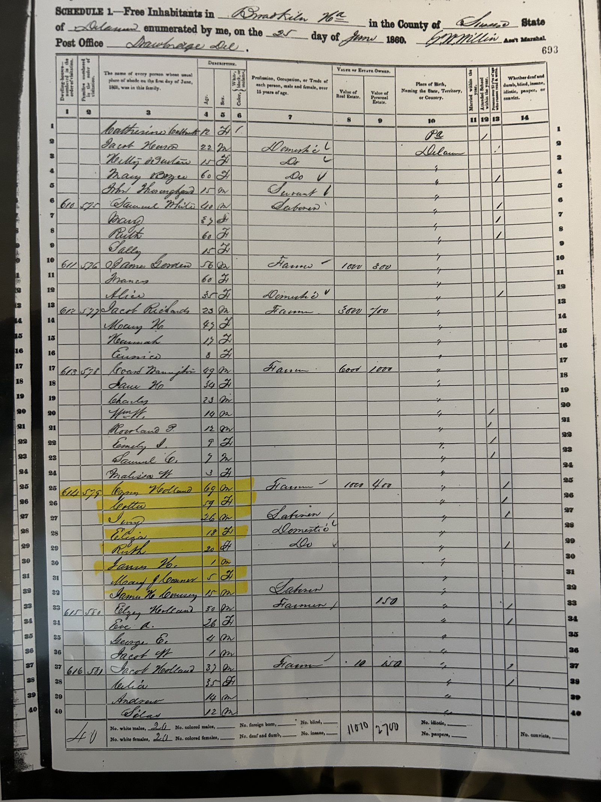
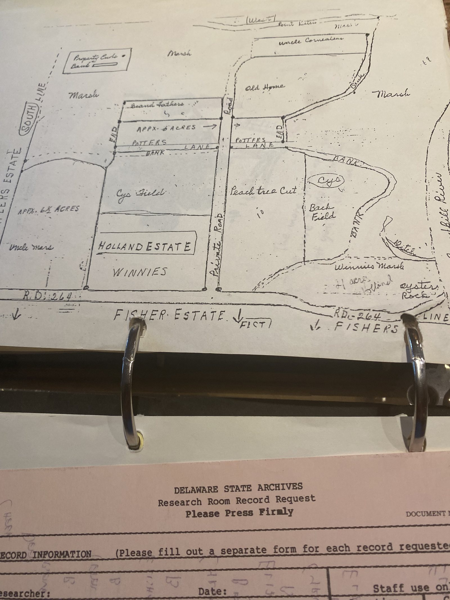
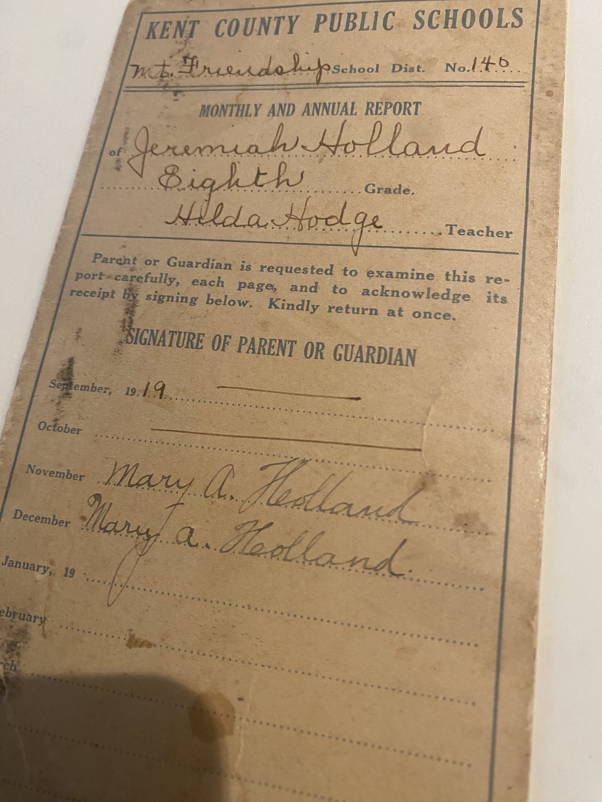
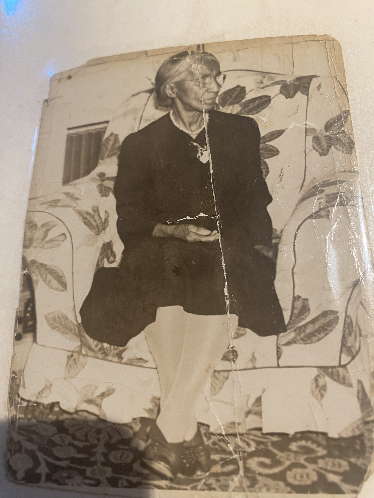
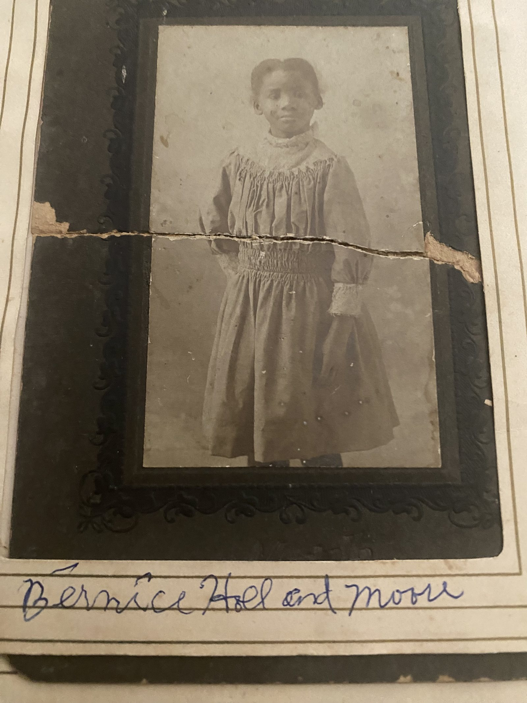
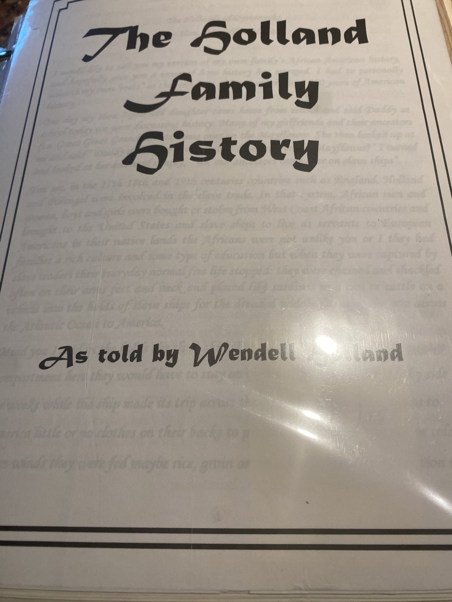
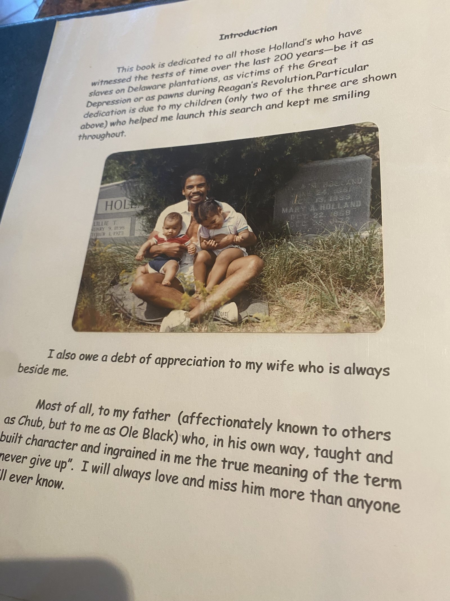

As told and researched by Hon. Wendell F. Holland — the record of a family from enslavement on a Sussex County tobacco plantation to freedom, land ownership, and seven generations of descendants.
Limerick lived enslaved on a roughly 900-acre tobacco plantation near Lewes and Rehoboth Beach, owned first by John Stuart and later sold, along with the land, to William Stephenson.
John Holland of Worcester County, Maryland married William Stephenson's daughter, Mary, and inherited the Stephenson plantation — and the enslaved people on it, including Anthony, Harry, Jacob, and a girl named Comfort. As was standard practice, they were given the last name of their enslaver: Comfort Holland is the earliest ancestor Wendell Holland can identify as a great-grandmother.
By 1797, John Holland's personal inventory — filed with Sussex County authorities and still in the family's possession — listed 900 acres of land and 14 enslaved people, valued alongside the household's furnishings.
When John Holland died, he willed the enslaved people on his plantation to his children, including a man named Cyrus — born around 1791 — valued at about $130.
Six years later, Elizabeth Holland, John Holland's widow, freed Cyrus. It was more than 30 years before the Emancipation Proclamation, at a time when slavery in the United States was near its peak. The family still holds a copy of his freedom papers, and marks February 9th every year as Holland Day.
About fifteen years after his freedom, Cyrus purchased 41 acres in Delaware for $150 — land the family still owns today, at a time when very few Black Americans were able to hold property outright.
Cyrus married Cotta Burton, and together they had about seven children — all born free, rather than inheriting enslaved status as they would have under their parents' earlier circumstances.
Among his descendants: two relatives who served in an all-Black Civil War regiment, a grandson who preached across Delaware from before the turn of the century through the Great Depression, a great-grandson who fought in World War I, and a great-grandson who was part of the first bused class to graduate Lower Merion High School and went on to become a judge.
Hon. Wendell F. Holland has spent years piecing this history together, largely from wills, personal property inventories, freedom papers, and oral history passed down through the family. As he puts it, slave research is difficult — there are few birth or death certificates, marriage records, or school records to draw on, so much of it comes down to family memory and whatever paper survived in a courthouse file.

What the records do show is stark. In one surviving 1755 inventory, an enslaved man named Anthony is valued at $75; Comfort and Jacob, together, at $43. By 1797, "Cyrus and family" — fourteen people in total — are valued at $350. Enslaved people were listed by first name only, alongside pots, pans, and furniture, in the personal property of the men who claimed to own them.
The name "Holland" entered the family around 1776, when John Holland of Worcester County, Maryland married Mary Stephenson and inherited her father William Stephenson's plantation — enslaved people included. Anthony, Harry, Jacob, and Comfort took the Holland name the way, as Wendell Holland has put it, "your dog, cat, or pet" would take a household's name. Comfort Holland is the earliest of his ancestors he can identify by name.
When John Holland died in 1821, he willed the people he'd enslaved to his children as personal property, alongside the rest of his estate. Among them was Cyrus, born around 1791 and valued in the estate inventory at $130.
Six years later — on February 9, 1827 — John Holland's widow, Elizabeth, freed Cyrus. It happened more than three decades before the Emancipation Proclamation, and at a moment when the enslaved population of the United States was still climbing toward its historical peak. The family still holds a copy of Cyrus's freedom papers, and February 9th has been observed in the family as "Holland Day" ever since — the day, as Wendell Holland tells it, that established the work ethic passed down through every generation that followed.
Cyrus worked and he could not attend school because it was against the law. Slaves had to work in the fields picking cotton or tobacco with their parents for many hours a day, bending over in the fields with temperatures rising as high as 90 to 95 degrees, without the benefit of shoes or a cool drink to quench their thirst. Hon. Wendell F. Holland, "The Hollands of Oysterrocks"
Cyrus didn't slow down after his freedom. About fifteen years later, in December 1845, he bought his first piece of land outright — 41 acres for $150. The family still owns that land today. It's a detail Wendell Holland returns to often: at a time when very few Black Americans were permitted to own property at all, Cyrus did.


Cyrus married Cotta Burton, and through the 1830s and '40s they had about seven children — all born free. Under the law of the time, a child's status followed their parent's: the children of enslaved parents inherited that status, while the children of free Black parents like Cyrus did not. It's a distinction Wendell Holland is careful to draw out, because it marks the exact point where his family's line stopped being defined by bondage.
Cyrus lived to be about 90, and died in March 1881. What followed is a family that shows up, generation after generation, in moments of American history usually told without them in the frame: two relatives who served in an all-Black Civil War regiment; a grandson who preached across Delaware from before the turn of the century through the Great Depression; a great-grandson who fought in World War I; and a great-grandson who was part of the first bused class to graduate Lower Merion High School, and who went on to become a judge.


This research itself has a story. Wendell Holland began it after his then-seven-year-old daughter came home from school one day, having heard classmates talk about ancestors who arrived on the Mayflower, and asked whether any of hers had too.
I turned and looked at her and said simply, "No, our ancestors came over on slave ships." Now, when my daughter is asked if anyone in her family came to this country on the Mayflower, she can tell them stories of the slave ships, of John Holland the slave master, of Cyrus and of her rich heritage. Hon. Wendell F. Holland


This history is drawn primarily from "The Hollands of Oysterrocks" and "The Holland Family History," both written by Hon. Wendell F. Holland from family wills, estate inventories, freedom papers, census records, and oral history. As with much African American genealogical research before the Civil War, some dates and relationships rely on family memory rather than surviving paper records, and the family continues to research, correct, and add to this account.